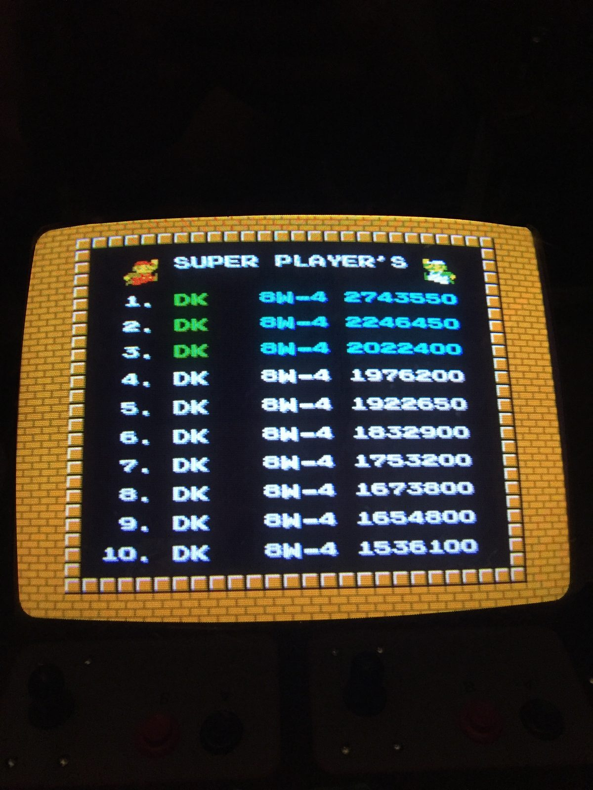

The Hardest Super Mario Bros.
Most People Never Noticed
The VS. UniSystem in the garage arcade runs VS. Super Mario Bros. — and if you think that's the game you mastered on your NES, the machine would like a word.
In March 1986, about a year after Super Mario Bros. conquered living rooms, Nintendo brought Mario back to the arcades on its VS. System hardware. At a glance, VS. Super Mario Bros. looks identical to the NES game — same physics, same music, same World 1-1 opening. That resemblance was the trap. Nintendo knew that a game you could finish on one quarter doesn't earn its keep in an arcade, so under the familiar surface they quietly rebuilt the game to fight back.
The changes start small and get mean. The hidden 1-Up Mushrooms in worlds 2-1, 4-1, 6-1, and 8-1? Gone entirely — and the ones that remain only appear if you've collected enough coins in the preceding levels. The famous infinite-lives turtle trick on the staircase? Patched, decades before "patch" was a word players knew: the Koopas and Buzzy Beetles on those stairs were swapped for Goombas, which can't be bounced. Even the Minus World glitch was partly bricked over. Extra lives now cost 100 to 250 coins on a new three-digit counter, and operators could set the machine to start you with two lives instead of three.
Then there are the levels themselves. Many of the easier NES stages were swapped out for crueler variants — 2-2, for instance, becomes the notoriously tricky 7-2 layout. More enemies, more bottomless pits, fewer and less generous power-up blocks throughout. And six levels in VS. Super Mario Bros. were entirely new — designs that players outside Japan wouldn't see again until they surfaced in Super Mario Bros.: The Lost Levels, the Japanese Super Mario Bros. 2 that Nintendo of America famously deemed too hard for release. American arcade-goers in 1986 were playtesting The Lost Levels and didn't know it.
One more tell that you're on the arcade version: the Super Player's table. The NES game kept no permanent record of your greatness — VS. Super Mario Bros. keeps a top-ten board with initials and the world each run reached. Which brings us to this particular machine:

Every slot on this board is initialed DK, every run went the distance to World 8-4, and the top score stands at 2,743,550. On a version of Super Mario Bros. built specifically to stop that from happening. No visiting initials have cracked the list yet — the machine is on free play, so bring your A-game.
Sources & further reading: Super Mario Wiki — VS. Super Mario Bros. · StrategyWiki · Wikipedia — The Lost Levels